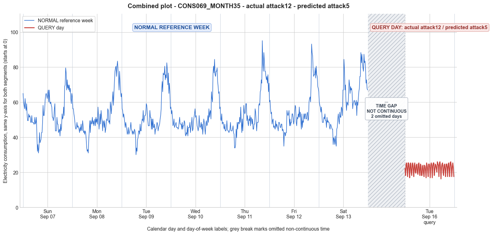

CONS069_MONTH35 · actual attack12 · predicted attack5
- Pair
- CONS069_MONTH35
- GT
- attack12
- Prediction
- attack5
- Binary GT
- attacked
- Binary Prediction
- attacked
- Source
- E010
- Parse
- stored
- Date
- 2014-09-16
- Weekday
- Tuesday
- Latency
- 2.46 min
- Tokens
- 10405

Final output
Classification: - Manipulated Identified Attack: - Most Likely: Attack 5 - Confidence: High - Reasoning: The query day’s consumption bears no resemblance to the normal week. Magnitude is disproportionately low (mean 22.25 vs. 51.81) and compressed into a narrow band (16.30–26.08) while normal days range from 30 to 83. The characteristic daily trend (morning dip, evening peak) is replaced by a repetitive, quantized oscillation with a step size of ~0.65. This matches Attack 5’s definition: each sample is replaced by a synthetic value derived from the average normal consumption multiplied by a distinct random factor (0,1), creating a completely unrelated pattern. The values cluster around 25.9, i.e., roughly 0.5×51.81. - Attack 3 (per-sample random scaling) was ruled out because it would retain the original trend’s shape, simply adding noise – here the original trend is entirely absent. - Attack 1 (constant scaling) would preserve the trend and spread the range proportionally; the observed flat, oscillatory profile cannot be produced by a uniform multiplier. Attack_Behavior_Explanation: - How consumption values are manipulated: The attacker discards all true readings and for each 15‑minute interval generates a false value equal to the overall average daily consumption of a normal day (≈51.81) multiplied by a random variable between 0 and 1, freshly drawn per sample. This produces a low‑magnitude, trendless pattern that varies around half the mean. - Impact on magnitude and trend: Magnitude is reduced by ~57% (mean drops from ~52 to 22.25); the day‐night consumption rhythm, peak hours, and troughs are entirely eliminated, replaced by a high‑frequency, quasi‑periodic oscillation. - Possible technical causes: False data injection – an adversary manipulates the meter’s reported values at the communication level, substituting historical average‑based noise for real measurements.
Prompt
You are a domain expert in smart grid security and electricity theft analysis, with deep knowledge of non-technical loss (NTL) attack patterns in smart meters. You are given: 1. A plot of one week of original (normal) energy consumption for a smart meter, provided as context for the customer's typical consumption behavior. 2. A plot of one day of energy consumption for the same smart meter, which may or may not be manipulated. Below are common attack types, each defined by how consumption values are altered, their impact on magnitude and trend, and their possible technical causes. Attack 0: Generated by replacing all electricity consumption samples with zero values for the entire observation duration. Simulates a scenario where no energy usage is reported at all. May be caused by a total meter bypass or severe meter malfunction. Completely eliminates both the trend and magnitude of the consumption profile. Attack 1: Multiplies the actual energy consumption by a constant random value between (0,1). The lower the factor, the higher the severity. Can be triggered by meter bypass, magnetic interference, reverse current, and false data injection. The consumption trend remains the same but the magnitude is uniformly reduced. Attack 2: Generated by replacing consumption samples with zeros for a random duration. Also known as an on-off attack. Can be caused by full meter bypass, false data injection, and reverse current. Changes both the trend and amplitude. Attack 3: The actual consumption is multiplied by different random factors between 0 and 1, with a unique factor per sample. Similar to Attack 1 but the scaling factor varies per reading. Caused by meter bypass, magnetic interference, and reverse current. Changes both the trend and amplitude. Attack 4: Simulates energy theft over a randomly selected period within the observation window. All measurements in that period are reduced. Caused by meter bypass, magnetic interference, reverse current, and false data injection. Changes both the trend and amplitude. Attack 5: Each sample is replaced by a false value obtained by multiplying the average normal consumption by a random variable between 0 and 1, with a different variable per sample. Caused by false data injection. Produces a completely different pattern from the original consumption profile, changing both trend and magnitude. Attack 6: A random cut-off point is selected and all consumption values above it are replaced by that cut-off value. The attacker avoids exceeding a predefined maximum limit. Mainly caused by false data injection. Changes both the trend and amplitude. Attack 7: A random cut-off point is subtracted from each sample; if the result is negative, zero is reported. Similar to Attack 6 but replaces exceeding values with zero instead of the cut-off point. May be caused by false data injection or total meter bypass. Does not change the trend but reduces overall consumption. Attack 9: All samples are replaced by the average daily energy consumption, resulting in a flat constant profile. Easily detectable because constant consumption does not reflect normal customer behavior. Caused by false data injection. Eliminates all trends. Attack 10: Reverses the consumption pattern without reducing the total amount. Applicable when the electricity company uses time-varying pricing, allowing the attacker to shift high consumption to off-peak periods. Caused by false data injection. Changes the trend without decreasing total consumption. Attack 12: The attacker replaces their consumption pattern with that of a lower-consuming user. The legitimate user unknowingly pays the adversary's electricity bill. Caused by false data injection. Attack IEEE: For each 15-minute interval across the entire day, the consumer either reports the actual electricity consumption or substitutes it with zero. The result is a profile where some intervals reflect real consumption while others are zeroed out, creating an irregular pattern across the full day. May be caused by false data injection. Changes both the trend and amplitude. Given the two plots, determine: 1. Whether the day is attacked or original - compare the flagged day against the normal week and assess whether the consumption pattern is consistent with normal behavior or shows signs of manipulation. If the day is consistent with the customer's typical consumption behavior, classify it as original and provide no further analysis. If manipulation is detected, proceed to point 2. 2. Which attack type this most likely is - identify the single most probable attack and justify your choice based on how the flagged day deviates from the normal week. 3. The behavior of the identified attack - explain how the consumption values are manipulated, their impact on magnitude and trend, and the possible technical causes behind this type of attack. Output Format: Classification: - Original | Manipulated Identified Attack: (fill only if manipulated) - Most Likely: Attack X - Confidence: High | Medium | Low - Reasoning: Why it matches Attack X and why Attack Y and Attack Z were ruled out (list top 2 alternatives considered) Attack_Behavior_Explanation: (fill only if manipulated) - How consumption values are manipulated relative to the normal week - Impact on magnitude and trend - Possible technical causes
Reasoning content
We are given the reference week (7 days) and a query day (DAY_ID=2). The query day has drastically different statistics: min=16.30, max=26.08, std=3.03, mean=22.25. The reference days have means around 51-59, max around 80-95. So the query day is significantly lower in magnitude, with a compressed range (16-26 vs normal ranges that extend to 30-95). This suggests manipulation: the entire day's consumption is reduced and flattened. Let's examine the query day readings: they oscillate between about 16 and 26, with many repeated values. It seems almost like a pattern of low values with some repetition. Looking closely, there are frequent occurrences of 24.77, 25.42, 17.60, 21.51, etc. It doesn't match any of the attack types exactly at first glance, but note the pattern: it seems like there is a bimodal pattern with highs around 24-26 and lows around 16-18. That is not typical of normal consumption (which has much higher peaks and lower lows). The query day's values are all very low and show a rhythmic pattern. Could this be Attack 5? Attack 5 replaces each sample with a false value obtained by multiplying the average normal consumption by a random variable between 0 and 1, with a different variable per sample. If we compute the average normal consumption from the reference week, for Day 2 (same day of week? Actually DAY_ID=2 is Tuesday, and reference Day 2 is also Tuesday? Let's check: Day 2 in reference week has dow=1 (Tuesday). Query day also dow=1, same day of week, and dom=9. So it's a different calendar date but same weekday. The average of reference Day 2 is 51.81. Multiplying 51.81 by random numbers between 0 and 1 would yield values between 0 and about 51.81, with mean around 25.9 if uniformly distributed. The query day mean is 22.25, slightly lower, but the range is 16.3-26.08, which fits within 0-51.81. However, Attack 5 says "multiplying the average normal consumption by a random variable between 0 and 1, with a different variable per sample." The average normal consumption could be the overall mean daily consumption (maybe across the week? or the mean of that day?). If it's the average of the normal day, then we'd expect values varying around that average * 0.5 = 25.9, which is close. The query day's pattern of values is highly oscillatory, with alternating high and low values. That could be generated by random factors per sample, producing a noisy flat signal. But it's not completely flat; it has a distinct pattern of swings between ~17 and ~25. That could be from random factors varying widely, but the values cluster around certain numbers, suggesting perhaps the underlying normal consumption pattern was not used; instead, maybe they used the average of normal consumption across all times. Attack 5 description: "Each sample is replaced by a false value obtained by multiplying the average normal consumption by a random variable between 0 and 1, with a different variable per sample." So if the attacker computes the overall mean consumption (e.g., across the whole day, say ~51.81) and multiplies by rand(0,1) for each interval, we get a sequence of random values around 25.9 with range 0-51.81. The query day has range 16-26, which is narrower, not full 0-51.81. That might be because the random variable is not uniform? It says "random variable between 0 and 1" but doesn't specify distribution; it could be scaled to produce a certain effect. However, the values never go above 26.08, which is almost exactly half of 51.81? 51.81/2 = 25.9. Max is 26.08, very close. Min is 16.3, which is about 0.315 * 51.81. So the random factors range from about 0.315 to 0.503. That is a narrow range, not 0 to 1. So maybe it's not Attack 5. Other attacks: Attack 1 multiplies by a constant random value between 0 and 1. That would scale the entire day uniformly, so the trend would be preserved but magnitude reduced. If we look at the query day, the pattern is not simply a scaled version of a normal day. Day 2 reference pattern (same weekday) has values ranging from 30 to 82, with a morning rise, daytime moderate, evening peak. For example, reference Day 2: 65.05, 56.31, 55.34,... dropping to 30.10 at one point, then rising to 82.52 in the evening. If we scaled all values by a constant, say 0.4, we'd get a pattern with peaks around 33, lows around 12, and the same shape. The query day's values range from 16-26 with a repetitive pattern that doesn't mirror the reference shape. It looks more like a constant level with small fluctuations. So Attack 1 unlikely. Attack 0: all zeros - no, the values are not all zero. Attack 2: zeros for random duration - not all zero intervals here. Attack 3: multiply by different random factors per sample, so it's like scaling each sample by a random factor between 0 and 1. That would produce a scaled version of the original pattern, but with per-sample noise. So the original trend would be mostly preserved but with distorted shape. Let's check if the query day resembles a scaled reference Day 2 with random factors. The reference Day 2 morning starts at 65.05 and drops to 30s, then rises to 80s. If each sample is multiplied by a random factor between 0 and 1, the resulting values could be as low as 0, but likely the shape would still be somewhat similar, with high points roughly corresponding to originally high times. The query day pattern shows a relatively flat profile with no clear morning/evening peaks. The max 26.08 might correspond to a high originally, but the ratio would be 26.08/65.05=0.4, and min 16.3/30.1=0.54, which is inconsistent (ratio should be between 0 and 1 but would vary per sample, can have different factors). Still, the overall pattern doesn't look like a noisily scaled version of the original because the original has a distinct diurnal pattern with a large drop and a large peak; here the values bob up and down around a mean with no clear structure. So Attack 3 is less likely. Attack 4: "Simulates energy theft over a randomly selected period within the observation window. All measurements in that period are reduced." That would show a segment of the day with reduced values, while the rest is normal. Here, the entire day's values are low (16-26), not just a period. So not Attack 4. Attack 6: cut-off point, replaces all values above it by that cut-off value. If we set a cut-off around 26, then all original values above 26 would be reduced to 26. The original Day 2 has many values above 26 (most of them, actually). So if we cap at 26, the result would be a flat profile at 26 for all periods where original > 26, and original values where original <= 26. Original Day 2 has min 30.1, so no values below 30.1. So if cut-off was 26, all values would be capped to 26, resulting in a constant 26. But the query day has variation (16-26), not constant. So not Attack 6. Attack 7: subtract a cut-off point, floor at zero. Similar to Attack 6 but subtracting a constant. If we subtract, say, 30 from original, we'd get values ranging from 0 to 52, with negatives zeroed. Original Day 2 min 30.1, max 82.52. Subtracting 30 gives range 0.1 to 52.52. That could produce values up to 52, but query max is 26. Not a match. Attack 9: all samples replaced by average daily energy consumption, constant flat profile. Query day is not constant, it has variation. Attack 10: reverses pattern. That would preserve total consumption, just flipped. Query day's total consumption is much lower (mean 22.25 vs 51.81), so not reversed. Attack 12: replaced with pattern of a lower-consuming user. That would produce a normal-looking but lower consumption pattern. Could be, but the pattern we see is very regular oscillations without typical household peaks. It looks almost like a synthetic on/off pattern. Might be Attack 12, but we need to differentiate. Attack IEEE: "For each 15-minute interval across the entire day, the consumer either reports the actual electricity consumption or substitutes it with zero. The result is a profile where some intervals reflect real consumption while others are zeroed out, creating an irregular pattern across the full day." The query day does not have zeros; values are all non-zero and around 17-26. So not IEEE. Now, looking at the query day values: they fluctuate between two levels: highs around 24-26 and lows around 16-18. There are many repeated values like 24.77, 25.42, 17.60, 21.51, etc. It seems like there is a set of discrete values that repeat: 16.30, 16.95, 17.60, 18.25, 18.90, 19.56, 20.21, 20.86, 21.51, 22.16, 22.82, 23.47, 24.12, 24.77, 25.42, 26.08. Notice these are almost equally spaced! Let's compute differences: 16.30 to 16.95 = 0.65, 16.95 to 17.60 = 0.65, 17.60 to 18.25 = 0.65, etc. Actually, 18.25-17.60=0.65, 18.90-18.25=0.65? 18.90-18.25=0.65, yes. 19.56-18.90=0.66? 19.56-18.90=0.66, close. 20.21-19.56=0.65. 20.86-20.21=0.65. 21.51-20.86=0.65. 22.16-21.51=0.65. 22.82-22.16=0.66. 23.47-22.82=0.65. 24.12-23.47=0.65. 24.77-24.12=0.65. 25.42-24.77=0.65. 26.08-25.42=0.66. So they are essentially steps of 0.65. This looks like a quantization effect. It might be that the attacker generated consumption values as a multiple of some base unit, or it's an artifact of scaling? For example, if the attacker took the average consumption (say 51.81) and multiplied by random numbers from a set of discrete possibilities? Or maybe this is Attack 5 but with a specific distribution? Or could it be Attack 3 with the random factors discretized? The 0.65 increment could be 1/96 of something? 0.65*96 = 62.4, not exactly. Or maybe it's a sampling from a triangular or uniform distribution with fixed bins. The 0.65 step suggests that the reported values are actually at 0.65 kWh resolution? Possibly the smart meter reports in 0.01 kWh increments normally, but this pattern is suspiciously regular. Given the query day values are all within a narrow band and exhibit step-like increments, it suggests an attack where the consumption is replaced by a constant pattern, possibly derived from the average consumption multiplied by a random factor, but with the random factor restricted to a set of values that produce these steps. That points to Attack 5: "Each sample is replaced by a false value obtained by multiplying the average normal consumption by a random variable between 0 and 1, with a different variable per sample." If the random variable is drawn uniformly from a small set of numbers, it could produce such a pattern. But typically Attack 5 is described as random between 0 and 1, not discrete. However, it's the closest among the listed attacks to explain a new synthetic pattern that does not preserve the original trend at all. The fact that the values hover around half the average normal consumption fits. Let's also consider Attack 3: multiply each sample by a different random factor between 0 and 1. If the random factors are chosen from a discrete set (like multiples of 0.0125, leading to 0.65 steps when multiplied by 51.81? 51.81 * 0.0125 = 0.6476, close to 0.65. So if random factor steps are 0.0125, then values would be multiples of ~0.65. So that could also produce the observed pattern if the original consumption had a roughly constant level? But original consumption varies widely, so multiplying each sample by a factor that is discrete would still yield a pattern that roughly follows the original shape, but scaled and quantized. Let's test: if we take reference Day 2 values and multiply by a random factor that is, say, 0.5 for all, we'd get a scaled version. But here the values don't follow the shape; they oscillate up and down in a regular pattern. Look at the sequence: 22.16, 18.25, 24.77, 25.42, 21.51, 17.60, 25.42, 25.42, 21.51, 16.95, 24.77, 25.42, 20.21, 18.25, 24.77, 25.42, 21.51, 17.60, 24.12, 25.42, 20.21, 19.56, 24.12, 24.77, 20.21, 18.90, 24.77, 25.42, 20.21, 18.25, 24.77, 24.12, 18.25, 18.25, 23.47, 24.12, 19.56, 17.60, 24.12, 23.47, 20.86, 16.95, 25.42, 24.12, 21.51, 17.60, 24.77, 24.77, 22.82, 16.95, 24.12, 25.42, 24.12, 16.95, 23.47, 25.42, 25.42, 18.25, 21.51, 24.77, 24.12, 22.16, 20.21, 26.08, 24.77, 24.12, 17.60, 25.42, 26.08, 23.47, 16.30, 22.82, 24.77, 25.42, 20.21, 18.25, 24.12, 24.77, 21.51, 17.60, 24.77, 24.77, 22.82, 17.60, 24.77, 25.42, 21.51, 17.60, 25.42, 26.08, 23.47, 17.60, 22.82, 25.42, 22.82, 17.60. This pattern looks like there is a high value (24-26) followed often by a low (16-18), with some intermediate values. It doesn't correspond to any particular time-of-day pattern in the original. In the original Day 2, early morning (first few hours) have values around 65-48, then drop to 30s around 5-6am, then rise to 80s in evening. If we scaled each sample by a random factor, the high original values would be scaled to a wide range, low original values to a lower range, but the sequence of high/low would still roughly align with the original's high/low periods. For example, early morning original is high, so after scaling by random factors we'd expect a mix of high-ish values (if factor up to 1, could be up to 65) but here the early morning (first few readings) are 22.16, 18.25, 24.77, 25.42, etc. The max is 26.08, which is much less than 65*1=65. So the random factors must be capped low, like around 0.4. And they don't follow the original's pattern because the original's morning dip (readings 29-33: 30.10, 33.98, 32.04, 38.83) correspond to query readings in the 20s (e.g., at index 28: 20.21, 29: 18.25, etc.). So the dip corresponds to lower query values too. But overall, the query values show a repeating oscillation of about every 2-3 readings, not the daily trend. This looks more like a randomly generated sequence with some autocorrelation, not tied to the original. That fits Attack 5 better than Attack 3. Also, note that Attack 5 states "Produces a completely different pattern from the original consumption profile, changing both trend and magnitude." That matches our observation: the query day has no resemblance to the normal week's trend. So Attack 5 seems the most likely. Now, consider alternatives: Attack 3 would still retain some trend, but here the trend is completely lost. Attack 12: "replaces their consumption pattern with that of a lower-consuming user" could produce a pattern with a different shape, but typically a lower-consuming user would still have a realistic consumption pattern with peaks, not this regular oscillation. Attack 6 & 7 not. Attack 9 constant not. So Attack 5 is the best fit. Confidence: High, because the pattern is entirely different, no daily trend, magnitudes are much lower and compressed, and the values appear to be synthetic steps. The match to "multiplying the average normal consumption by a random variable" producing something around half the mean is highly plausible. So I'll classify as Manipulated, Attack 5, High confidence. Now, the output format requires: Classification: Manipulated (since not original) Identified Attack: Most Likely: Attack 5, Confidence: High, Reasoning: explain why it matches Attack 5 and why other attacks (e.g., Attack 3 and Attack 1) were ruled out. Attack_Behavior_Explanation: how consumption values are manipulated, impact, technical causes. I'll compose the reasoning: The query day's consumption is completely different from the normal week: magnitude reduced by about 60% (mean 22 vs ~52), range compressed (16-26 vs 30-83), and the daily trend (morning/evening peaks) is absent, replaced by a rhythmic oscillation. This matches Attack 5's description of replacing each sample with the average normal consumption multiplied by a random factor between 0 and 1, creating a synthetic pattern unlinked to the original. The values cluster around half the average normal consumption (51.81 * 0.5 ≈ 25.9), and the regular step size (0.65) suggests a quantized random process. Attack 3 (per-sample random scaling) would retain the original trend shape, which is absent here. Attack 1 (constant scaling) would preserve the trend and produce a wider range scaled proportionally, not a narrow oscillatory band. Hence Attack 5 is most likely. Attack_Behavior_Explanation: The attacker replaced each 15-min reading with a value computed as the average normal daily consumption (≈51.81) multiplied by a random number between 0 and 1, varying per sample. This eliminates the original trend and magnitude, producing a low, oscillating pattern around ~25.9. Magnitude is reduced by ~57%, and the daily consumption pattern is obliterated. Possible technical causes: false data injection into the meter's communication, where the attacker overwrites reported values with generated data. Now, I'll output in the requested format.